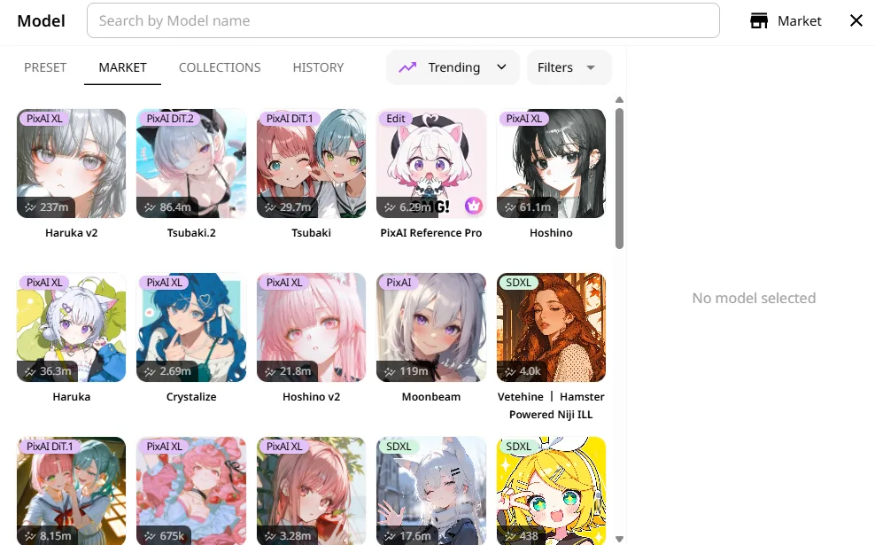

从零到第一张动漫插画：PixAI 网页端出图全流程
注册账号、选对模型、写提示词、调整参数——这篇教程带你用 PixAI 从零跑出第一张像样的日系动漫插画，避开新手最容易踩的三个坑。
读完这篇，你能在 PixAI官网 网页端独立完成一次完整的动漫风格插画生成：从登录、选模型、写提示词，到调整参数批量出图，并且知道怎么把点数用在刀刃上。前置条件只有一个——有一台能打开浏览器的电脑；想在手机上也玩的话，先从 官方下载 拿 Android 安装包。手机端功能有裁剪，这篇先聚焦网页端。
准备阶段：账号、点数和登录方式
打开浏览器，进入平台主页，先把账号注册好。这里有个非常重要的细节，我见过不止一次有人在这一步栽跟头：同一个邮箱用不同方式登录，会建立两个互相独立的账号。Google 邮箱用「Google 一键登录」和「邮箱密码登录」是两套数据，点数、作品、会员权益互不通用。
建议从第一天就固定一种登录方式。如果你习惯用第三方账号，选 Google 或 Discord 就行，一路点授权就完了；如果偏向邮箱注册，就老老实实用邮箱+密码，别换来换去。
注册完成后，先去个人主页确认一件事——每天登录送的 10,000 点到账了没。点数不设过期时间，可以一直攒，发布作品、收点赞、看 App 内广告、邀请好友都能额外回血。免费档用默认模型标准模式批量出图，一次大约消耗 3,200 点，光靠每日登录，一个月理论上能支撑数千张图的产出。这对想长期玩的人来说基本够用，付费会员只是加速和额外点数，不是刚需。
第一步：选对主力模型，别在这一步纠结半小时
进入生成页面，右侧面板顶部就是模型选择区。你会看到一排缩略图，这叫 Quick Select——平台把最常用的几个模型直接摆在那里，不用翻完整列表。

新手面对一堆模型名最容易犯的错误是挨个点进去看示例图，然后陷入「这张好看那张也不错」的选择焦虑。其实直接从这三个里挑一个就能开跑：
- Tsubaki.3：全画风通用，中文提示词转英文的理解最稳，不知道选什么就选它。
- Haruka v2：SDXL 架构的经典动漫风，手部和眼睛描写特别精致，适合想玩 LoRA 叠加的用户。
- Tsubaki.2：多角色场景友好，带 35 种画风预设开关，对自然语言提示词容忍度最高。
别急着点「See All Models」去翻完整列表，新手阶段把主力模型吃透比广撒网重要得多。一个常见误区提醒：换模型不会保留原来的画风，同一段提示词在不同模型下产出可能完全不同。正确的试法是固定提示词，只换模型各跑一次批量，直观对比谁更合口味。
第二步：写提示词，用你习惯的方式就行
PixAI 对提示词的友好度在同类平台里算是高的。Tsubaki 系列模型基于 DiT 架构，直接写自然语言长句没问题，比如「一个银发少女站在樱花树下，花瓣飘落，傍晚的暖光，动漫风格，细节丰富」——这种完整描述它能理解得不错。
如果选的是 Haruka v2 这类 SDXL 模型，建议切换到标签式写法：一串逗号分隔的关键词，比如 silver hair, 1girl, cherry blossom, evening glow, anime style, masterpiece。SDXL 架构对长句理解弱，但标签控制精度高，画师风格 LoRA 也只能挂在 SDXL 模型上生效。
我给新手的建议很简单：先写，然后加「masterpiece, best quality, detailed」这三个通用质量词。负面提示词（Negative Prompt）区填 low quality, blurry, bad anatomy, extra limbs，基本的翻车情况先堵上。
平台还有个「配方」功能，在模型面板下方。配方就是预设画风包，点一下就让画面靠向某种风格，不用逐字敲提示词。热门配方推荐区会自动刷新当前社区在用的画风，点了之后还可以继续追加自己的提示词微调——新手可以先套一个配方当起步，跑一张看看效果再决定要不要微调。
第三步：参数面板只调这几个，其他先别动
新手面对密密麻麻的参数面板最容易慌。实际上你只需要关注四个设置，其他全部保持默认：
- 宽高比（Aspect Ratio）：默认 1:1 正方形，想做竖版立绘选 2:3 或 3:4，想做横版壁纸选 16:9。
- 分辨率（Resolution）：标准档就行，高清档消耗点数翻倍，新手阶段看不出明显差别。
- 批量数量（Batch Count）：一次生成 4 张或 8 张，同一段提示词多跑几张挑一张最好的，点数消耗按张数算。
- 速度档（Speed）：标准模式，免费档高峰期可能需要排队，不想等可以花点数插队，或者等非高峰时段再跑。
采样步数、采样方式、CFG Scale、VAE 这些进阶参数先全部锁定默认值。等你跑了十几张图，对出图效果有了自己的感觉，再回来逐个调参做对比实验——具体每个参数怎么调、不同模型的推荐范围可以去 PixAI文档 翻。
第四步：跑起来，然后学会挑图
全部设置好之后点生成按钮，等几十秒到一两分钟，四张或八张图就刷出来了。
别急着一张一张放大看细节，先扫一遍整体构图和人物比例。新手写提示词容易贪多，一句话塞五六个场景元素，结果每个元素都画不清楚。如果整体构图乱了，先精简提示词，砍掉不必要的场景元素，把核心人物描述写细一点再跑一次。
挑图的时候盯住三个地方：手部、眼睛、头发。这三处是 AI 绘画的传统重灾区，也是模型之间差异最明显的地方。如果 Tsubaki.3 跑出来的手部总是糊成一团，试试切 Haruka v2——它在肢体描写上确实比 DiT 系模型更稳一些。
新手最容易翻车的三个卡点
卡点一：点数突然「没了」
八成不是点数过期，而是你登错了账号。退出当前会话，逐个试一遍你注册过的登录方式（Google / Discord / X / Apple / 邮箱），找回散落的那个账号。点数不会过期，可以一直累积，但账号之间不能合并，找回后固定用一种方式登录，别再换来换去。
卡点二：换了 LoRA 之后完全不生效
LoRA 有架构隔离规则：SDXL 训练的 LoRA 只能配 SDXL 模型（Haruka/Hoshino 系列），DiT 架构的 LoRA 只能挂 Tsubaki 系列模型。挂着 SDXL LoRA 却切到 Tsubaki.3，那条 LoRA 就是空气。先确认模型和 LoRA 架构匹配再跑。
卡点三：免费档排队太久想插队，花了点数结果还是没拿到好图
插队点数是一次性消耗，不退款。正确的做法是：先用标准模式批量跑几张，从里面挑一张最接近预期的，然后用局部重绘功能（框选需要修改的区域，补写新提示词）定点修，比整图重开省钱得多。平台编辑面板里的「局部重绘」入口就在生成页右侧，支持框选任意区域，修手部、修表情、换服装都靠它。
进阶一句话
跑通完整流程之后，下一步可以试试把自己画的参考图丢进「Reference Pro」模型里，或者传一张角色图用衍生创作生成器做手办和收藏卡的预览效果——这些功能在网页端工具箱里，入口是一个工具箱图标，点进去就能看到。
这套资料在三个仓库都能拿到，维护更新的频率也一致：GitHub 上的完整目录、国内用户访问更快的 Gitee 镜像，以及 GitCode 上的备份副本，各有各的渠道覆盖不同的访问场景。